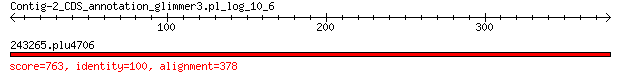

bitscore colors: <40, 40-50 , 50-80, 80-200, >200
 BLASTP 2.2.31+
Reference: Stephen F. Altschul, Thomas L. Madden, Alejandro A.
Schaffer, Jinghui Zhang, Zheng Zhang, Webb Miller, and David J.
Lipman (1997), "Gapped BLAST and PSI-BLAST: a new generation of
protein database search programs", Nucleic Acids Res. 25:3389-3402.
Reference for composition-based statistics: Alejandro A. Schaffer,
L. Aravind, Thomas L. Madden, Sergei Shavirin, John L. Spouge, Yuri
I. Wolf, Eugene V. Koonin, and Stephen F. Altschul (2001),
"Improving the accuracy of PSI-BLAST protein database searches with
composition-based statistics and other refinements", Nucleic Acids
Res. 29:2994-3005.
Database: eggnogv4.proteins.all.fa
14,875,530 sequences; 5,112,597,290 total letters
Query= Contig-2_CDS_annotation_glimmer3.pl_log_10_6
Length=378
Score E
Sequences producing significant alignments: (Bits) Value
243265.plu4706 763 0.0
> 243265.plu4706
Length=443
Score = 763 bits (1969), Expect = 0.0, Method: Compositional matrix adjust.
Identities = 378/378 (100%), Positives = 378/378 (100%), Gaps = 0/378 (0%)
Query 1 MFSGGALSRASIFALGIMPYISASIIIQLLTVVHPTLAEIKKEGEAGRRKISQYTRYGTL 60
MFSGGALSRASIFALGIMPYISASIIIQLLTVVHPTLAEIKKEGEAGRRKISQYTRYGTL
Sbjct 66 MFSGGALSRASIFALGIMPYISASIIIQLLTVVHPTLAEIKKEGEAGRRKISQYTRYGTL 125
Query 61 VLAIFQSIGIATGLPNMPGMQGLVINPGFAFYFTAVVSLVTGTMFLMWLGEQITERGIGN 120
VLAIFQSIGIATGLPNMPGMQGLVINPGFAFYFTAVVSLVTGTMFLMWLGEQITERGIGN
Sbjct 126 VLAIFQSIGIATGLPNMPGMQGLVINPGFAFYFTAVVSLVTGTMFLMWLGEQITERGIGN 185
Query 121 GISIIIFAGIVAGLPPAIGHTIEQARQGDLHFLLLLLVAVLVFAVTFFVVFMERGQRRIV 180
GISIIIFAGIVAGLPPAIGHTIEQARQGDLHFLLLLLVAVLVFAVTFFVVFMERGQRRIV
Sbjct 186 GISIIIFAGIVAGLPPAIGHTIEQARQGDLHFLLLLLVAVLVFAVTFFVVFMERGQRRIV 245
Query 181 VNYAKRQQGRRVYAAQSTHLPLKVNMAGVIPAIFASSIILFPGTIASWFGGGTGWNWLTT 240
VNYAKRQQGRRVYAAQSTHLPLKVNMAGVIPAIFASSIILFPGTIASWFGGGTGWNWLTT
Sbjct 246 VNYAKRQQGRRVYAAQSTHLPLKVNMAGVIPAIFASSIILFPGTIASWFGGGTGWNWLTT 305
Query 241 ISMYLQPGQPLYVLLYASAIIFFCFFYTALVFNPRETADNLKKSGAFVPGIRPGEQTAKY 300
ISMYLQPGQPLYVLLYASAIIFFCFFYTALVFNPRETADNLKKSGAFVPGIRPGEQTAKY
Sbjct 306 ISMYLQPGQPLYVLLYASAIIFFCFFYTALVFNPRETADNLKKSGAFVPGIRPGEQTAKY 365
Query 301 IDKVMTRLTLVGAMYITFICLIPEFMRDAMKVPFYFGGTSLLIVVVVIMDFMAQVQTLMM 360
IDKVMTRLTLVGAMYITFICLIPEFMRDAMKVPFYFGGTSLLIVVVVIMDFMAQVQTLMM
Sbjct 366 IDKVMTRLTLVGAMYITFICLIPEFMRDAMKVPFYFGGTSLLIVVVVIMDFMAQVQTLMM 425
Query 361 SSQYESALKKANLKGYNR 378
SSQYESALKKANLKGYNR
Sbjct 426 SSQYESALKKANLKGYNR 443
Lambda K H a alpha
0.328 0.142 0.424 0.792 4.96
Gapped
Lambda K H a alpha sigma
0.267 0.0410 0.140 1.90 42.6 43.6
Effective search space used: 714589971720